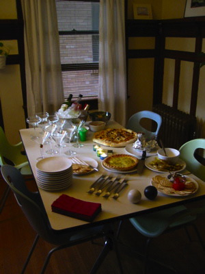

The infamous web-auteur Dan Benjamin has released a new web app for the sole purpose of tracking your offline wine experience — called Cork’d
Finally, the internet is living up to its potential.
The infamous web-auteur Dan Benjamin has released a new web app for the sole purpose of tracking your offline wine experience — called Cork’d
Finally, the internet is living up to its potential.
My boy Dan (from the old school) has started a new fiction blog.
“Art School Confidential” looks close enough to home to be darn funny.
Sounds like it too.

Assuming you already have a pie crust a quiche is easy, tasty, and impressive. Even James Bond can make a quiche
Your pie crust should be par-baked before starting. If you are using a frozen pie crust, place it in the oven at 425º F for 15-20 minutes, until the edges just start to brown.
When your pie crust is ready, turn the oven down to 350º F.
In mixing bowl, gently beat 3 eggs and one yolk with approx 1/2 teaspoon of salt (to taste). Add pepper to taste. Whisk in one cup of milk.
Spread gruyere cheese evenly in the bottom of the pie crust. Chop cooked bacon, and spread evenly over the cheese. Slowly pour the egg and milk mixture into the pie crust. Pouring slowly will keep the cheese on the bottom, which will keep the crust from getting soggy.
Carefully place the filled pie crust onto the center rack of the oven, and bake for 30 to 45 minutes. The center of the quiche should still be slightly jiggly, the edges will have completely set.
Pull the quiche from the oven and let rest for 10 minutes or so. The center of the quiche will finish cooking, and it will hold together better when cut.
Serve a slice with a simple salad and a glass of white wine. Or eat greedily over your sink when no one is looking.
I’ve been working my fool head off lately. But now my work life is starting to clear, and while I haven’t been updating abouthalf.com, I have been in the kitchen:
http://www.blueplatebachelor.com/archives/2006/04/30/simple-pie-crust/
http://www.blueplatebachelor.com/archives/2006/05/01/quiche-lorraine/
And I did manage to sneak off to the beach with a friend a couple of weekends ago. We borrowed her roomie’s dog, because a day at the beach without a dog is like coffee without cream.


This recipe is a modification of an adaptation of the recipe found in the joy of cooking.
Pre-heat your oven to 425º F
Sift your flour then measure 1 1/2 cups into a mixing bowl, and mix in 1/2 teaspoon of salt.
Divide shortening up into small portions (either cut into cubes, or use a spoonful at a time), and “cut” into the flour mixture.
This can be done using quick pulses in a food processor, adding a little more shortening each time, or by hand using knives or a pastry cutter.
When all the shortening is mixed into the flour, it should have a grainy appearance with a few lumps. It should look almost too dry to do anything with.
Using a spoon (or quick pulses of the food processor) mix in 1 table spoon of cold water at a time, until the mixture starts to stick to itself. Again, this will look too dry to do anything with.
When you can mash the dough together in your hand, and it sticks, it’s ready.
In the bowl, form the dough into a ball using your hands, then transfer the dough to a plastic food storage bag (zipper not needed). Squeeze the dough into one corner of the bag, twist it up tight, and throw it in the refrigerator for about 15 or 20 minutes.
Go have a beer, watch some TV, whatever.
Letting the dough rest in the fridge allows the flour to fully hydrate, and makes it easier to work the dough.
Dump the dough out of the plastic bag, into the center of your pie plate. Shape it first into a disk, about 3/4 of an inch thick, and center in the middle of the pie plate.
Starting at the center of the disk, use your fingers press the dough out flat, filling the pie plate and covering the sides.
Use a fork to poke holes in the bottom, then bake at 425º F for 15 to 20 minutes (until it just barely starts to brown). Allow this to cool before filling.
I ran across this today:
http://davidweiss.blogspot.com/2006/04/tour-of-microsofts-mac-lab.html
Basically a virtual tour of the Mac lab at Microsoft.
Pretty impressive. It reminds me a little of when I was teaching (though our lab was a little — er — less well equipped)
It’s also a good reminder that Microsoft and Apple are not mortal enemies, or polar opposites. There’s a lot of passion in both camps about what they do, and how they do it.
While it’s true that Apple and Microsoft are competitors in certain markets — they’ve been BFF on and off for years.
Microsoft’s office products debuted on the Mac back in the day. Microsoft also invested in Apple right after Steve Jobs re-took the helm (to the tune of millions). Apple always lovingly trots out the latest offerings from Microsoft at their developers’ conferences.
It’s a love-love-hate-sometimes hate-mostly love-we like you but we’re going to make fun of you anyway relationship.
I just re-watched “So I Married An Axe Murderer” which is one of the best under-rated movies of all time.
Back when the earth had just cooled Mike Meyers had yet to become the buck-toothed Austin Powers, and had — dare I say — a modicum of restraint.
This movie has everything. Beat poetry. Funny accents. Jokes about large noggins. A police chief pretending to be all rough and tough like the guys on TV. Beat poetry.
Worth a rent. I recommend it.
(Heed! Pants! Now!)
I have been having this weird recurring glitch on my laptop.
Periodically, with no recognizable pattern, the OS X Dock would become totally unresponsive.
Dashboard wouldn’t come up, Exposé wouldn’t work, the application switcher woudln’t work, and I couldn’t click an icon to launch or bring an application forward.
Also, it seemed like any operation that was accessing the file system would take a really long time.
The Dock was hung so bad, that it wouldn’t even shut down durning a normal log out or restart. The computer just hung there waiting for something.
The odd thing is that the dock wasn’t completely dead, just mostly dead. For example if an email came in during this freeze, the un-read email indactor on Mail.app’s icon would light up just fine.
Force quitting the Dock from the command line or Activity Monitor didn’t help either. The Dock process would just reappear in the process list, but wouldn’t actually relaunch. Force-quitting the loginwindow process (which forces you to log out) did clear up the problem temporarily.
It started out only if I was runing a lot of stuff at the same time. Like a heavy FTP transfer running in the background with Dreamweaver, Photoshop, and Safari open at once. But as time went on, it just started happening whenever, and frequently.
When I upgraded to 10.4 a while back (which is prior to this bug showing up) I broke the cardinal rule, and I didn’t do an “Archive and Install” I just installed right on top of 10.3.
I think for most people this would be fine, but I had a bunch of wonky crap running in 10.3 that probably introduced some weirdness.
I’ve never found any reference to this particular problem any place. Perhaps my google-fu has become weak.
My solution today was to blow out my old system, doing an Archive and Install, then downloading all the system updates, and reinstalling mysql, php, etc.
Long tedious process, but it looks like it fixed the problem.

I threw a cocktail party last night, and pictured above would be the ‘spread’. Paté, Quiche, Pizza, chicken skewers, brie and crackers.
I had this bright idea to pre-mix all the cocktails into their requisite liquor bottles, and store them all in the freezer.
Mental note: Without shaking cocktails over ice, they are significantly stronger.
I had ever intention of shooting some party action shots, but I somehow forgot. Perhaps due to the extra-strength cocktails. I’m having my people look into that.